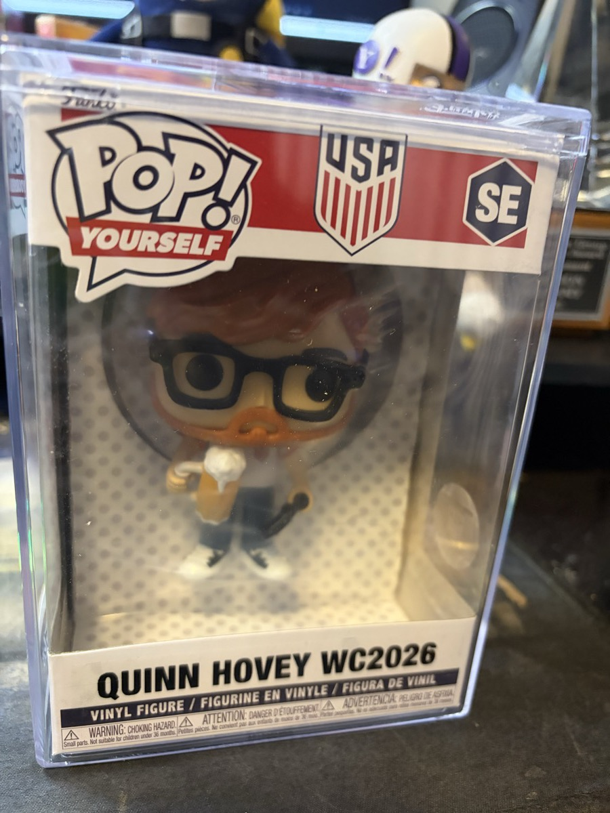
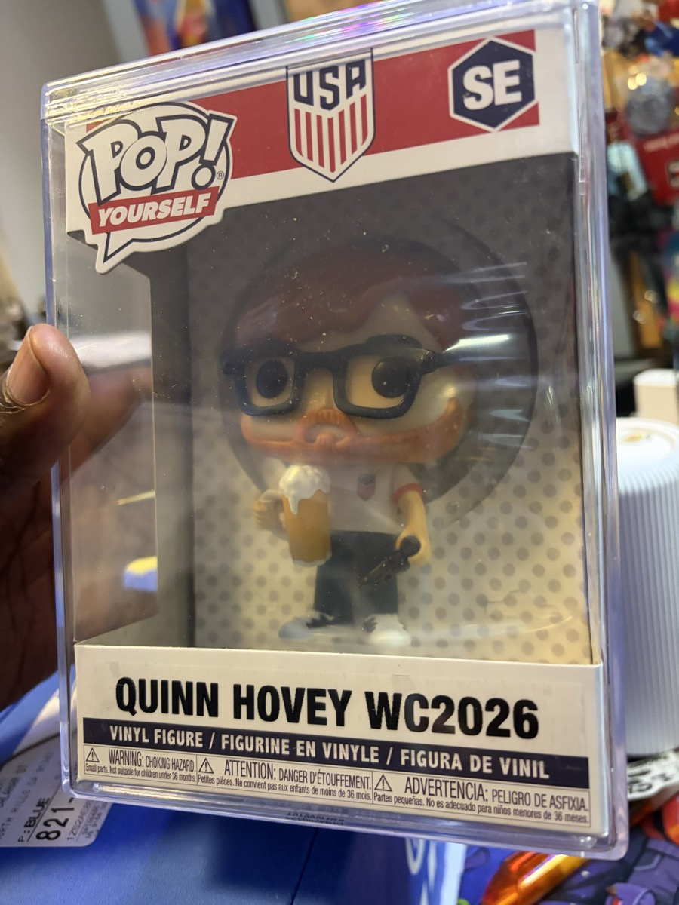

The US Men's National Team opens its World Cup at SoFi Stadium. Quinn drove from San Diego for this. Gordon is not at the match. Gordon is the home base. The opening ceremony brings Katy Perry, Future, Lisa, Anitta, Rema, and Tyla.
Gordon bought you a FIFA World Cup 2026 Super Shoutout. Your name, QUINN HOVEY, will be featured in the official pre-match show at USA vs Paraguay. It appears once. It is not replayed. Which means one rule owns your evening:
Be in your seat by 5:00 PM. FIFA requires shoutout recipients seated at least 60 minutes before kickoff. The shoutout runs once during the pre-match program. Miss it and it does not come back. Leave the Outlaws party early. The party will forgive you.
Your name is integrated into the official matchday show inside SoFi, part of the pre-match entertainment before the USA opener.
Phone out from 5:00 PM on. When it hits, film it. Caryn gets the first send. Gordon gets the second.
Thirty-plus years of football friendship, and your first World Cup match in person. Gordon wanted the stadium to say your name.
A custom Pop! Yourself figure: QUINN HOVEY WC2026. Glasses, the beard, a U.S. Soccer jersey box, sealed in a UV protector. It exists. It is at Gordon's place. It comes home with you Sunday.


Quinn's at SoFi, but Gordon's not. So Gordon gets a Friday night in LA without compromise. Watch the match somewhere joyful. Or dance. Or both.
8919 Santa Monica Blvd. Gordon's home bar, and Alex Rogers works there. USA v Paraguay on every screen, Stars and Stripes Splash in hand (recipe on Watch + Sip). Call (424) 378-0471 to confirm match-night plans.
West Hollywood, Friday June 12 confirmed. Sunset Strip energy. Easy access from Gordon's home base.
FIFA Fan Festival, 2:30 PM. $10 GA ticket. Stay through USA v Paraguay at 6 PM on the big screen.
Friday night at the original. Mixed crowd. Match on every screen. Dance floor active by 9 PM.
Hollywood. House and techno. The DJ booth is a religion. Doors at 10 PM.
Historic Black queer club. Jewel's Catch One. Where queer LA dance lives. Look up the night.
Pulisic, Pochettino, the opening ceremony on FOX. Cook dinner. Text Quinn between halves. Quiet wins the night too.
Friday night you have no obligation. Pick the energy that fits. Dance floor or couch. Either is right.